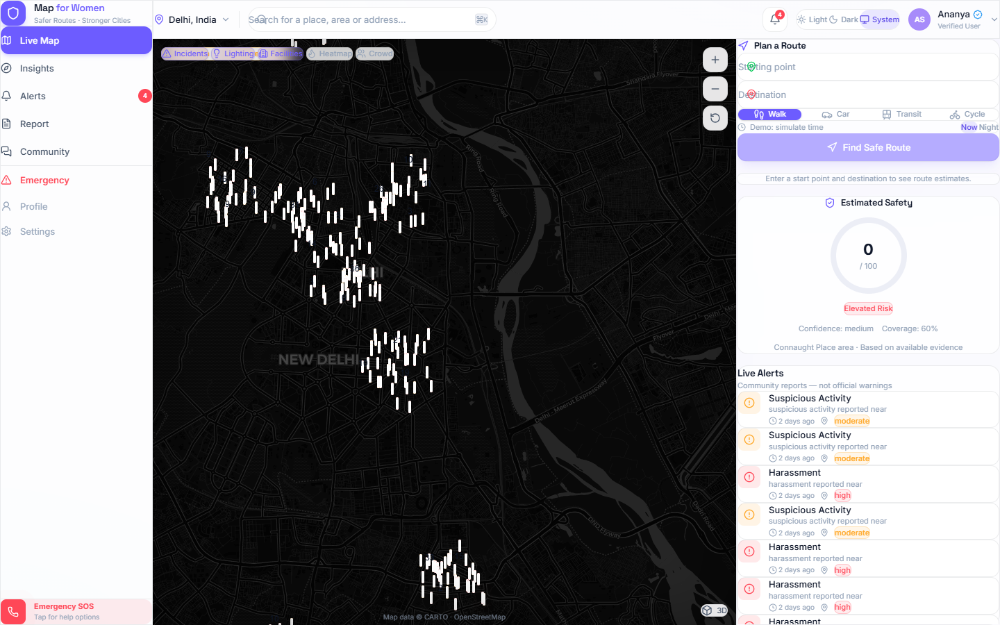
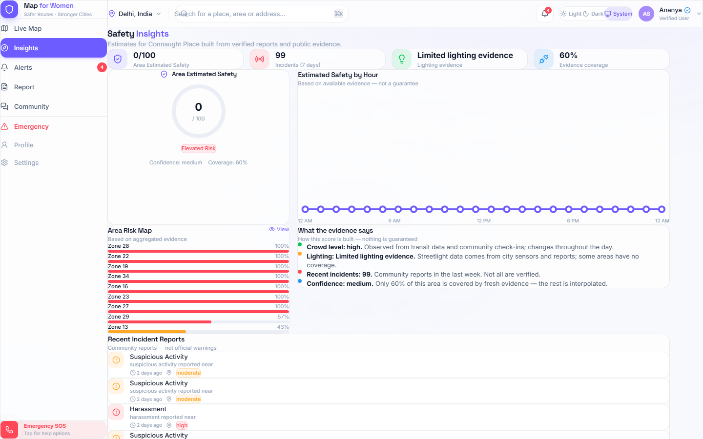
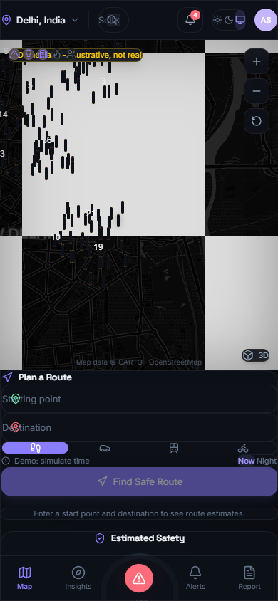
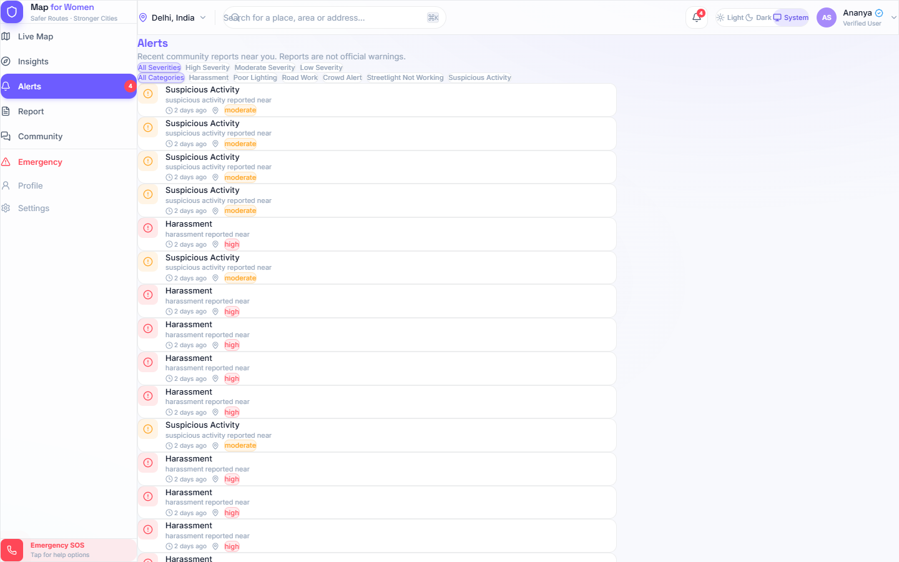

Women's safety, mapped — route planning that weighs evidence, uncertainty, and time of day, instead of guesswork.
Streetlights that fail, stretches with recent incident reports, and quiet sections change real risk hour by hour. Generic maps don't see it — and they don't show their uncertainty either.
The gap between the bus stop and the front door is where most journeys feel — and are — least protected.
Incident and infrastructure data exists across civic systems, but not in the navigation people actually use.
Apps that claim a "safety score" rarely say what it's made of or how confident it is.
Incident reports, streetlight status, proximity to emergency services — each observation carries source, freshness, and confidence. Scoring is rule-based and transparent, never a hidden "AI vibe".
Three routes per trip — safety priority, balanced, time — each with score, confidence, and uncertainty shown. Time-of-day aware: night weighting changes the recommended route.
SOS with helplines 181/112/102 and live-location sharing. Share-trip links. A report loop that feeds back into evidence — and streetlight data municipalities can action.


Route planning with incident + lighting overlays (left) and live area insights (right). "Demo data" badge marks seeded data — nothing is presented as real.


Women Helpline 181 · Police 112 · Ambulance 102 — one-tap calls.
Browser geolocation → share/copy a maps link to trusted contacts.
One button turns a planned trip into a shareable directions link.
Submissions feed the evidence pipeline; ML stays gated behind validation.
"This product never promises safety. It surfaces evidence, shows uncertainty, and labels demo data as demo — so every estimate can be questioned, audited, and improved."
Every observation records source, freshness, and verification state. The UI shows uncertainty percentages instead of false precision.
Seeded evidence is tagged demo_seed and flagged with a visible badge — an honest demo is a believable demo.
Evidence snapshots and model versions are traceable (data/versions manifests). Nothing is silently replaced.
Safety-scoring logic, overlays, time-of-day, evidence pipelines.
E2E suites cover routing, SOS, themes, mobile, and console hygiene.
10 Delhi hotspots, deterministic and idempotent — one command to run.
PostGIS + OSRM + API + web. API degrades to an in-memory evidence snapshot offline.
Stack: FastAPI · PostGIS (PostGIS spatial joins) · OSRM (routes) · Redis · Next.js · Playwright E2E.
Pick the route with the best supported evidence, see why, and call or share in one tap — on a phone or a laptop, online or offline.
Streetlight-failure and incident overlays are exactly the operational data municipal teams can act on. One extra consumer of the same evidence.
Swap the OSM extract and the evidence snapshot — Delhi runs today; every district profile is a config, not a rewrite.
Consumes public evidence, exposes JSON APIs, and keeps ML out of routing until it passes validation gates.
Watch the live demo — phone in one hand, laptop in the other. Every number you'll see is measured from the running system.